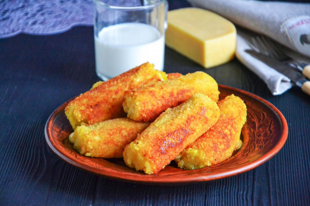

ООО "Русский дар" 
Вернутся в начальный раздел | Вернутся на главную страницу
Оборудование: нож, кастрюля, крупная терка, сковородка и плита.

Подготовьте ингредиенты. Картошку предварительно хорошо помойте под проточной водой с щеткой. Сыр для этой закуски можно использовать любой, но я предпочитаю более тянучие сорта, например, моцареллу (не рассольную, а для пиццы).

Картофель отварите в кожуре до готовности. Как варить картошку в мундире? Положите чистые клубни в кастрюлю с холодной водой, поставьте на средний огонь. Доведите до кипения, огонь убавьте. Варите картошку 25-30 минут, в зависимости от размера клубней. Готовность проверьте острым ножом — он будет легко протыкать картофелину. Воду слейте, картофель слегка охладите и очистите.

Натрите остывший картофель на крупной терке. Можете просто растолочь ее толкушкой.

В тертый картофель добавьте соль и перец. Перемешайте массу до однородности.

Сыр нарежьте прямоугольными брусочками. Брусочки должны быть не очень длинными.

Яйцо помойте и разбейте в миску. Обязательно мойте яйца перед использованием, так как даже на кажущейся чистой скорлупе могут находиться вредные бактерии. Лучше всего использовать моющие средства для пищевых продуктов и щетку. Яйцо взбейте до однородности.

Из картофельной массы сделайте небольшие лепешки. Положите в середину по брусочку сыра.

Сформируйте из картофеля палочки, облепливая со всех сторон сыр. Палочки должны быть цельными, без разрывов, иначе при жарке сыр будет плавиться и вытекать в разрывы.

Обмакните каждую палочку в яйцо, затем обваляйте в панировочных сухарях.

В сковороде на среднем огне разогрейте растительное масло и обжарьте на нем картофельные палочки со всех сторон до появления золотистой корочки. А можете налить в глубокий сотейник побольше растительного масла и обжарить палочки во фритюре. Выложите готовые палочки на блюдо. Чтобы убрать излишки жира, застелите блюдо бумажными полотенцами.

Получаются вот такие румяные золотистые карточки с хрустящей корочкой и мягкой начинкой под ней. Подавайте их в качестве закуски с любым соусом по вкусу. Приятного аппетита!

Шаг 1, Шаг 2, Шаг 3, Шаг 4, Шаг 5, Шаг 6, Шаг 7, Шаг 8, Шаг 9, Шаг 10, Шаг 11.